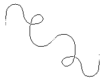

Neau is a location found at the center of Kanikule.
While the names of places and characters have been modified from their original Lietal glyphs, Neau, the place from which the Neauismetica takes its name, comes from a marking found on its shore:
